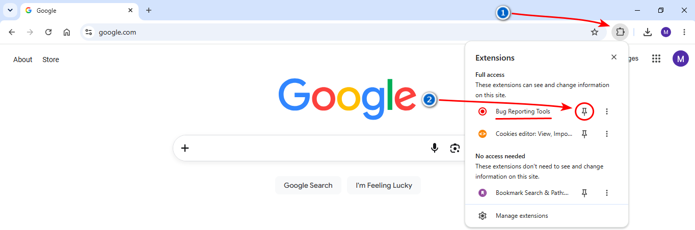
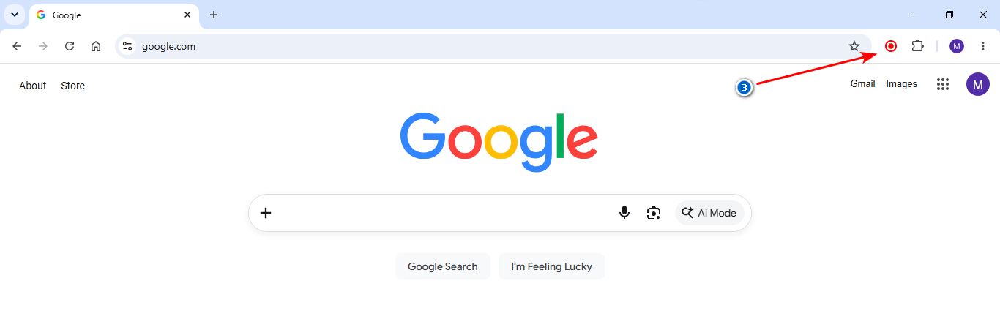
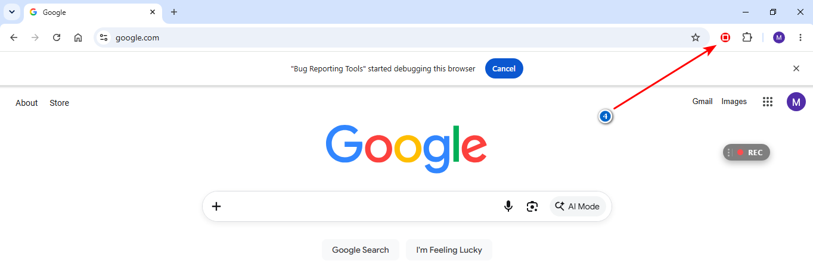

1. Click the puzzle icon in your browser's toolbar
2. Click the pin icon next to Bug Reporting Tools.

1. Click the Bug Reporting Tools icon to start recording.

2. Reproduce the issue on the page.
3. Click the icon again to stop recording.

Your diagnostic HTML report will download automatically to your machine.